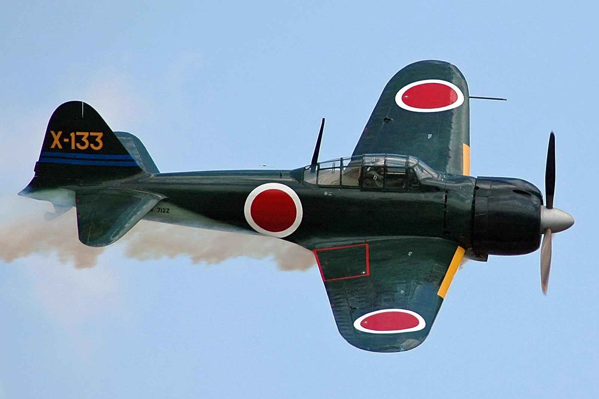

About the A6M Zero
The Mitsubishi A6M Zero was a nimble long-range carrier-based fighter aircraft operated by the Imperial Japanese Navy.
The Mitsubishi A6M Zero was a nimble long-range carrier-based fighter aircraft operated by the Imperial Japanese Navy.